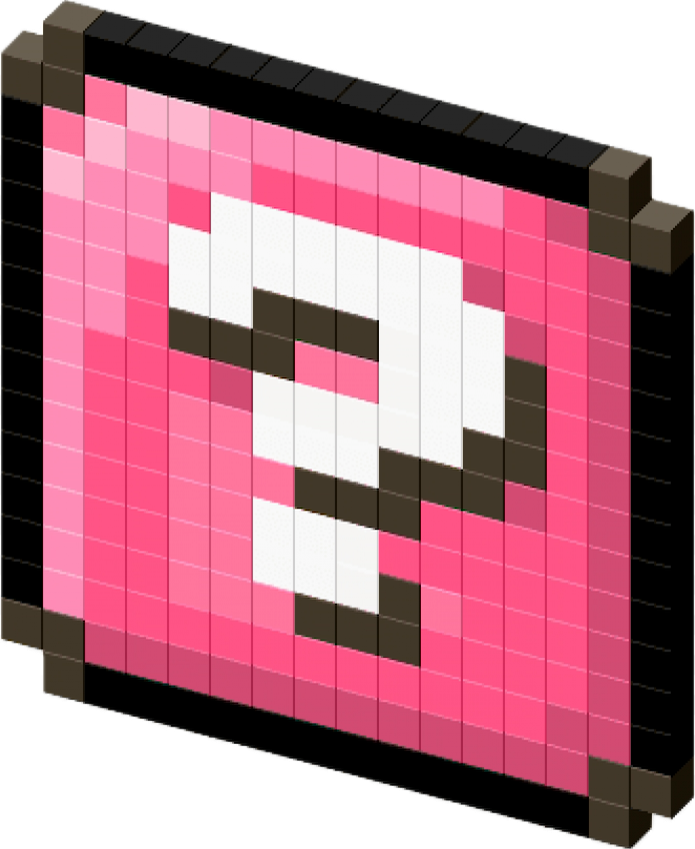

╭── ⋅ ⋅ ── ✩ ── ⋅ ⋅ ──╮

Q-1: On veut en apprendre plus sur chacune de vous deux! Présentez vous!
╰┈➤Merci pour ta question!
-Imane:"J’ai été au collège général Louis Aragon à Chatenoy-le-Royal, j’ai eu mon brevet mention Bien en 2019 et je suis ensuite passée au lycée.
J’ai fait une seconde générale et j’ai fini par choisir les spécialités Maths, SVT et SES car je comptais au départ faire des études de psychologie.
J’ai fait mon année de première et j’ai décidé d’abandonner la spé maths mais prendre l’option maths complémentaires en terminale.
En terminale j’étais très perdue, je ne savais plus quoi faire après le lycée. J’enchainais les rendez-vous chez la conseillère d’orientation mais rien ne m’aidait.
J’ai choisi informatique seulement car on me disait qu’il y avait de l’avenir. J’obtient mon bac en 2022 puis rentre en L1R de la fac de science technique, j’aime pas vraiment et hésite souvent à changer de cursus, mais je ne l’ai pas fait.
Maintenant me voila en L1 en 2024."
-Farah:"Hello, moi c'est Farah, j'ai 20 ans et je viens de Mâcon, pas loin de Lyon. J'ai été au college Saint-exupery, où j'ai obtenu mon brevet avec mention très bien.
Ensuite j'ai fait mes années Lycée au Lamartine, un lycee général, où j'ai obtenu mon bac avec mention bien avec les spécialités SVT MATHS LLCE.
Je ne savais pas dans quoi me lancer, j'ai jamais eu de métier de rêve mais plutôt été intéressée par plusieurs choses en même temps, et ce depuis petite.
J'hésitais avec une école d'ingénieurs, PASS (médecine) et l'architecture.
J'avais donc fait le choix de faire medecine, je garde de bons souvenirs des cours, c'était super passionnant mais je ne me voyais pas là dedans... j'ai quand même été au bout de l'année parce que les cours me passionnaient.
Après la première année de médecine je réfléchissais encore à ce que je pourrais faire, je me voyais exercer dans aucun domaine. J'ai donc décidé de revenir sur mes pas et de m'orienter vers mes autres choix.
Puis quelques semaines avant la rentrée je m'étais inscrite en L1 info pour pouvoir suivre par la suite
un cycle ingénieur. J'ai donc été acceptée à condition de faire une année de remédiation (L1R), que j'ai suivie l'an dernier. Me voila cette année en L1 informatique-électronique.
Sinon je suis passionnée par pas mal de choses dans la vie (musique, japon, mode, cinéma, livres, l'astronomie, l'art en general...) et je suis fière de vous annoncer que je suis ceinture noire de karaté."
Q-2: Comment vous êtes vous rencontrées ??
-Imane et Farah:"On s'est rencontrées l'année dernière en L1R, en remédiation. Fun fact: on partage la même date d'anniversaire: le 14 juin 2003 pour moi (Farah) et 2004 pour moi (Imane). On s'est tout de suite ben entendu, c'était comme un coup de foudre amical. Par la suite on s'est rendu compte qu'en plus de partager le même anniversaire on partageait aussi les mêmes goûts et passions. En plus de ça on a souvent le même avis sur les sujets sur lesquels on parle. Ce qui est drôle aussi c'est que nos frères partagent aussi la même date d'anniversaire. Même à l'heure d'aujourd'hui on a du mal à y croire à vrai dire. Ça parait irréel quand on le dit et puis les gens ont du mal à nous croire quand on le raconte."
Q-3: Comment les idées du site vous sont-elles venues !?
-Farah et Imane:"Pour êtres honnêtes, les idées ont vraiment fusé. À vrai dire, nous partageons les mêmes passions encore une fois donc les sujets ont vraiment été faciles à trouver!! Nous sommes toutes les deux fan de la couleur rose, d'hello kitty et tout ce qui s'en suit comme vous pouvez le voir hihi. Pour ce qui est de la colorimtérie et des décos du site, on avait déjà notre petite idée, mais en ce qui concerne le contenu... ça a été plus dur. On a beaucoup hésité, changé plusieurs fois de sujets en cours de route mais on a préfèré rester nous-mêmes, alors voilà la version finale. On pensait justement que le fait d'avoir autant de choses en commun allait nous aider à être efficaces par rapport au choix des sujets etc... mais tout l'inverse. Après, on pense sincèrement que les idées et sujets sont bien choisis. Maintenant à vous d'en décider. En tout cas nous en sommes fières et pensons que c'est l'essentiel. N'oubliez jamais de faire quelque chose pour vous et non pas pour les autres. Vous en ressortirez que plus forts. Nous avons vraiment pris plaisir à faire ce site. Maintenant nous espèrons qu'il vous plaira :))"
Q-4: Avez vous des projets pour le futur?
Tout d'abord, merci pour ta question!
-Imane:"J’aimerais plus tard travailler à partir de chez moi, car si j’ai des enfants je voudrais que ça soit moi qui les élève et pouvoir les voir grandir. Mais si je dois travailler en dehors de chez moi ça ne me dérangererait pas plus que ça.
J’aimerais avoir un travail stable et où je ne risque pas d’accident ou de finir par être dans l’incapacité de travailler.
Je ne sais pas si je vais continuer jusqu’au master car j’en ai pas vraiment le courage en toute honnêteté."
-Farah:"Dure dure comme question pour quelqu'un qui n'a jamais su se projeter mais à vrai dire j'en ai une petite idée. J'aimerais travailler de chez moi également, je pense que ça me faciliterait beaucoup de choses. J'aimerais aussi beaucoup voyager,
mon rêve serait de faire le tour du monde. Je commencerais assurèment par le Japon."
Q-5: Où vous voyez-vous dans 5 ans...?
-Farah:" Dans 5 ans, j'aimerais avoir terminé mes études c'est à dire valider ma licence ainsi qu'un cycle ingénieur. J'espère que j'aurais accompli tous les objectifs que je me suis fixés.
Dernier point mais non des moindres, j'espère être heureuse et épanouie dans les choix que j'aurais fait... j'espère du plus profond de mon coeur que je ne regretterais aucun choix."
-Imane:"Dans 5 ans je ne sais pas trop ce je ferais où qui est-ce que je serais mais j’espère que j’en aurais fini avec les études."
╰── ⋅ ⋅ ── ✩ ── ⋅ ⋅ ──╯